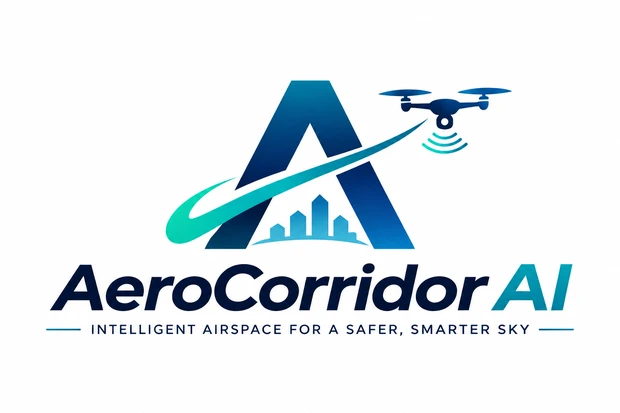

STARTUP / PROOF OF CONCEPT
Director
AeroCorridor AI
STARTUP / PROOF OF CONCEPT
Director
Developing network-assisted coordination for multiple drones. The concept combines cooperative RF sensing, edge intelligence, and routing for degraded GNSS and connectivity.